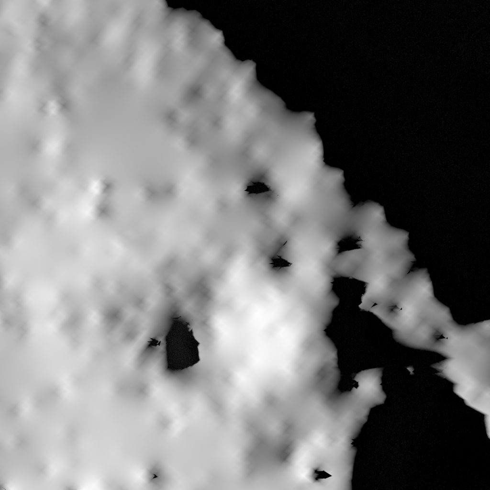
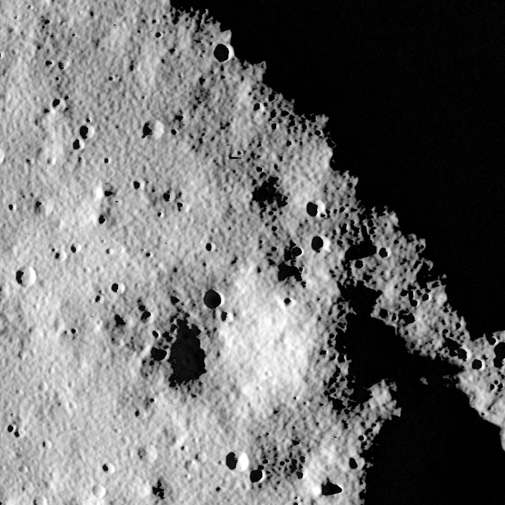
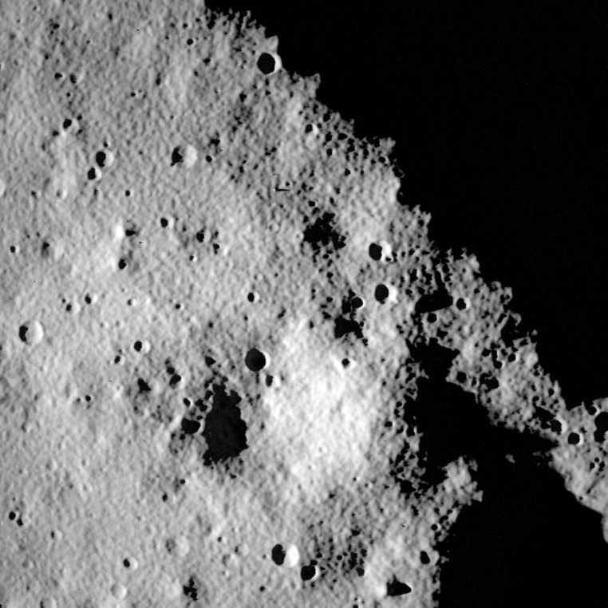
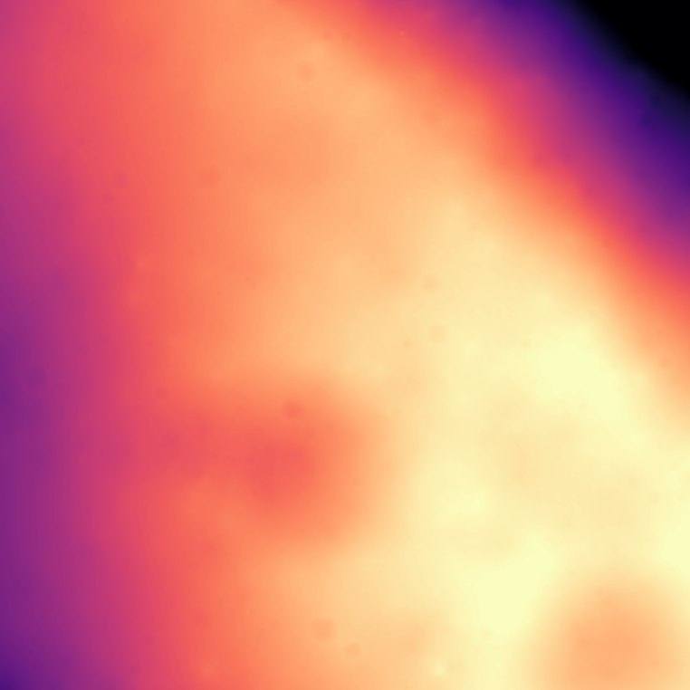
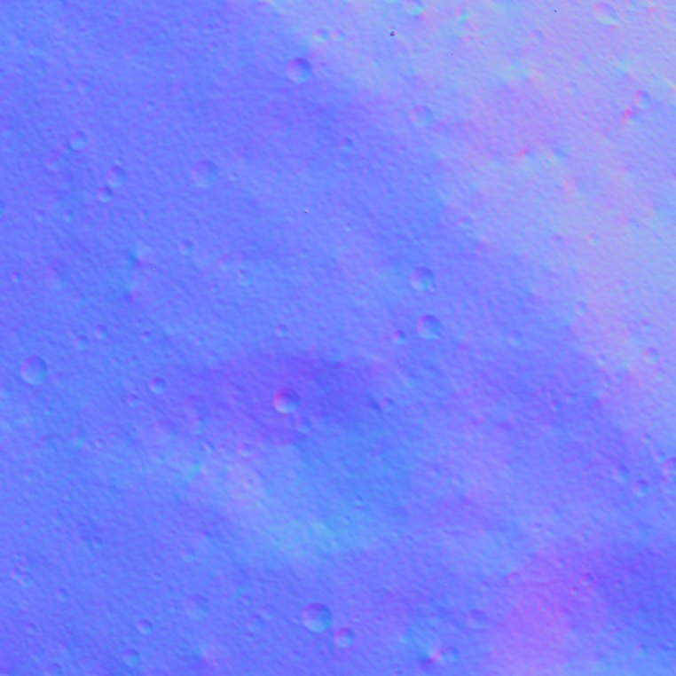
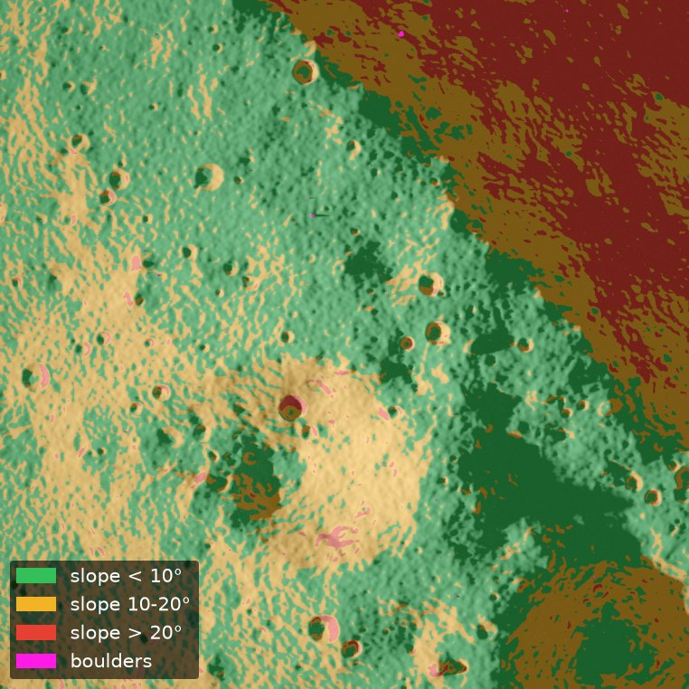
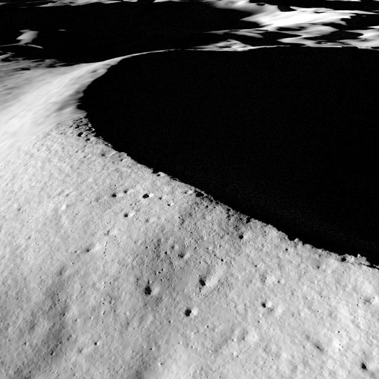
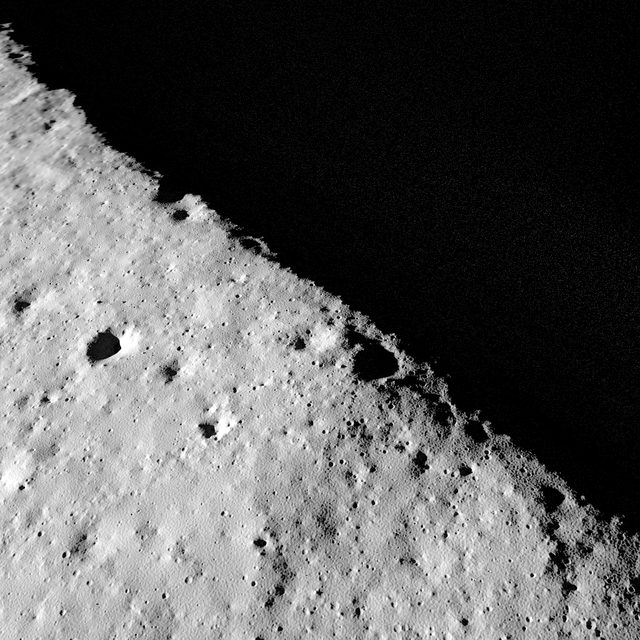
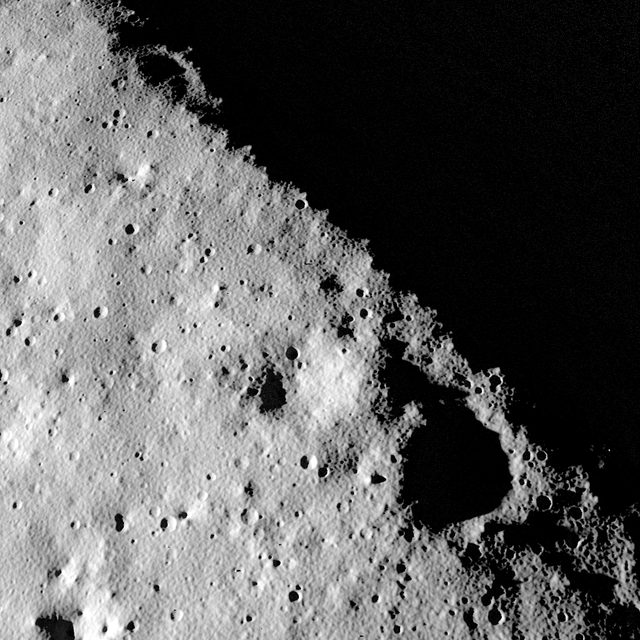

Penombra
penombra, Italian: half-lightDescent images of the lunar south pole, in the light a lander will really meet.
Physically based, rendered from NASA elevation data and the real position of the Sun, and delivered with the exact answer for every pixel. Navigation software can be tested here before it flies.
At the south pole, the Sun never climbs
Near the lunar south pole the Sun circles the horizon and stays within a few degrees of it. Light arrives from the side, so even small relief throws long shadows, and those shadows swing round as the Sun moves. Craters, rocks and slopes look very different from the same features under a high Sun.
A lander that navigates by its camera has to recognise craters, track the ground and spot hazards in exactly this light. Testing that software needs images taken in it, with the right answer known for every pixel. Real descent images of the polar regions are few, and none come with that answer.
What the best map cannot show


Elevation map only PenombraSame place, same Sun, same camera. Drag the handle. At 500 m one pixel covers about 40 cm of ground, twelve times finer than the 5 m grid of the elevation map.
The most detailed public elevation map of the site, from NASA's Lunar Orbiter Laser Altimeter, has one height every 5 m. Close to the ground that is far too coarse: rendered on its own, the surface looks smooth and blurred, with the triangles of the map showing through.
Penombra adds what the map cannot resolve, with sizes and numbers taken from measurements of the Moon.
- 18,145small craters, 4 to 20 m acrossEquilibrium size distribution, Minton et al. 2019
- 28,949boulders, 0.4 to 8 m acrossCounts from Chandrayaan-2 images near Shackleton, Nagori et al. 2024
- < 10 mroughness, calibrated on the map itselfEvery crater and boulder is listed in a catalogue that comes with the data
Every pixel comes with its answer




The simulated navigation camera, 500 m above the target, with noise, blur and 12-bit output.
- Per pixel
- Calibrated brightness (I/F), distance from the camera, 3D position, surface orientation, motion to the next frame, and which terrain source it came from
- Per frame
- Camera position and attitude, lens model, Sun direction, exposure time
- Per scene
- Catalogue of every generated crater and boulder, with position and size
Public data and physics, checked on every frame
Real elevation maps, near and far
NASA LOLA data at 5 m around the site, 80 m out to 30 km and 400 m out to 150 km, on a curved Moon. One seamless surface, so distant ridges cast their shadows too.
The real Sun on a real date
Sun position from NASA's SPICE ephemerides. Each descent is planned for a moment when the Sun is truly above the local skyline, not just above the flat horizon.
Lunar reflectance
The Lunar-Lambert model with the McEwen phase function, rendered with Blender Cycles, including light bounced between slopes. Pixel values are calibrated reflectance.
What the map cannot resolve
Small craters, boulders and roughness generated from published lunar statistics. A fixed seed keeps the same world in every frame, so every frame agrees with the others.
A navigation camera, with its flaws
A generic 12-bit camera: optics, automatic exposure, lens blur, vignetting, noise, and motion blur computed from the real movement during each exposure.
A flyable descent
A powered-descent guidance law, written in Python and in MATLAB with identical results, with checks on thrust and clearance above the ground.
Descent to the rim of Shackleton

T+0 s3,000 m
T+63 s1,467 m
T+94 s852 m- T+120 s500 m
- Frames
- 24 images, 1024 × 1024 px, 45° field of view
- Descent
- From 3,000 m to 500 m above the target in 120 s
- Date
- 27 November 2026, 15:00 UTC
- Sun
- 1.40° above the horizon, 4.05° above the real skyline
- Ground truth
- Per pixel, per frame and per scene, as above
- Size
- 734 MB
- Licence
- CC BY 4.0, free to use with attribution
The sample dataset will be published on Zenodo with a DOI, together with a short program to load it. Write to be told when it is out.
For anyone who has to land by sight
Lander navigation teams
Test crater matching, visual odometry and hazard detection in the light they will meet, and measure the errors against exact answers.
Researchers and students
A benchmark with known ground truth for papers and theses, and training and test data for learned detectors.
Camera and sensor teams
Check exposure, dynamic range and noise on scenes that are half in deep shadow.
A sequence for your mission
Your landing site, your trajectory, your date and your camera, with the same ground truth. A 24-frame sequence renders in about 11 minutes on a laptop, so changes are quick.
Version 0, October 2026
One site, one date, one trajectory so far. Next come validation against real images from NASA's Lunar Reconnaissance Orbiter, more sites and lighting conditions, and a demonstration with a navigation algorithm measured against the ground truth.
- Rocks and soil share the same reflectance; there is no Earthshine.
- The distant terrain is smoother than the terrain near the target.
- The camera is generic, not a model of a specific flight camera.
Feedback from navigation engineers is very welcome
- rocco-maria-cherubini
- GitHub
- roccocherubini/penombra